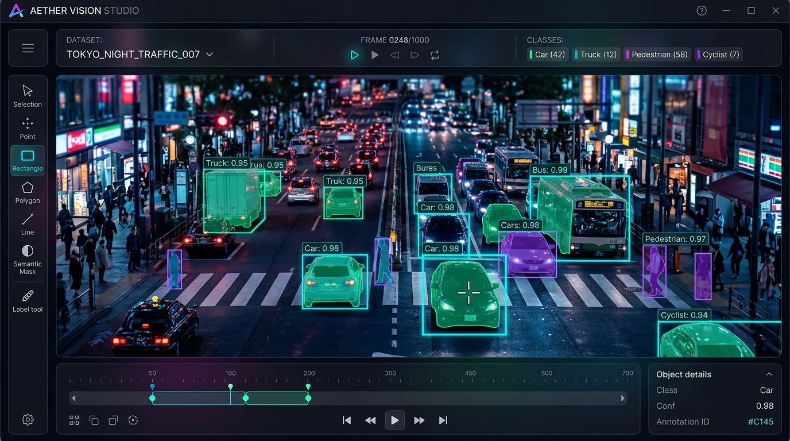

In modern computer vision engineering, real-world model accuracy is fundamentally bounded by dataset curation quality, label precision, and iteration velocity. While state-of-the-art detection architectures like YOLOv8, YOLO11, and RT-DETR continue to push inference speeds, the tooling required to curate, label, clean, and fine-tune proprietary datasets remains fragmented, expensive, and cloud-locked.
Most computer vision teams encounter three painful roadblocks with commercial SaaS annotation tools: strict cloud-upload policies that violate defense or medical data sovereignty, heavyweight multi-container overheads (like self-hosted CVAT requiring PostgreSQL, Redis, and Nuclio just to label 500 images locally), and disconnected fine-tuning loops. I engineered the Open Source Data Annotation Tool to eliminate this friction: an ultra-lightweight, 100% offline, local-first platform that unifies model-assisted auto-annotation, visual dataset QA, automatic train/val/test splitting, and in-browser model training.
1. The CV Annotation Dilemma: Cloud SaaS vs Heavy Self-Hosting
Why build a local-first labeling platform when tools like Roboflow, CVAT, and Labelme exist?
- Cloud Lock-In & Data Sovereignty: Commercial SaaS platforms require uploading confidential client video feeds (highway surveillance, factory floor robotics, medical diagnostics) to remote servers, violating strict enterprise compliance and NDAs.
- Heavy Infrastructure Overhead: Traditional open-source suites like CVAT demand 8+ Docker containers, custom reverse proxies, and complicated server configuration that overwhelms a single engineer trying to label data on an edge laptop.
- Fragmented Feedback Loops: Engineers label in tool A, write one-off Python scripts to clean corrupt bounding boxes in tool B, split directories in tool C, and switch to a separate terminal for training. KeyFlow unifies this into a single closed feedback loop.
Zero cloud uploads. Zero complex multi-container setup. A single command python app.py boots a production-grade annotation studio with OS-level file hardlinking, model-assisted labeling, and live in-browser GPU training.
2. System & State Architecture
The platform decouples high-speed frontend HTML5 Canvas rendering from thread-safe background inference workers and local file storage:
Data Annotation Tool Architecture Pipeline
- TIER 01 Canvas Client Cursor-anchored zoom, sub-pixel polygon & bbox math
- TIER 02 Flask Backend REST endpoints, SQLite session state, OS hardlinking
- TIER 03 Inference Queue Background threading workers running YOLO / TensorRT
- TIER 04 Training Engine Subprocess training with real-time SSE log streaming
3. Model-Assisted Pre-Annotation: 100K Images in 30 Mins
Manual labeling from scratch is the single largest bottleneck in computer vision. The platform features an automated background pre-annotation worker that leverages pre-trained or custom weights to pre-fill bounding boxes:
import os
import torch
from ultralytics import YOLO
def detect_optimal_device():
"""Auto-profiles hardware and selects the fastest compute backend."""
if torch.cuda.is_available():
return 'cuda:0'
elif hasattr(torch.backends, 'mps') and torch.backends.mps.is_available():
return 'mps'
return 'cpu'
def run_model_assisted_inference(model_path: str, image_path: str, conf_threshold: float = 0.25):
"""
Natively supports .pt, .onnx, .engine (TensorRT), .tflite, and .torchscript.
Outputs normalized coordinates in standard YOLO format with 8-decimal precision.
"""
device = detect_optimal_device()
model = YOLO(model_path)
results = model.predict(
source=image_path,
conf=conf_threshold,
device=device,
verbose=False
)
annotations = []
for r in results:
boxes = r.boxes
masks = r.masks
# Bounding Box Extraction
if boxes is not None:
for box in boxes:
cls_id = int(box.cls[0].item())
x_center, y_center, width, height = box.xywhn[0].tolist()
annotations.append({
"type": "bbox",
"class_id": cls_id,
"coords": [round(c, 8) for c in (x_center, y_center, width, height)],
"confidence": float(box.conf[0].item())
})
# Instance Segmentation Polygon Extraction
if masks is not None:
for i, poly in enumerate(masks.xyn):
cls_id = int(boxes.cls[i].item())
annotations.append({
"type": "polygon",
"class_id": cls_id,
"points": [[round(pt[0], 8), round(pt[1], 8)] for pt in poly.tolist()]
})
return annotations
4. Precision Canvas & Complete Keyboard Shortcuts
High-velocity labeling requires zero cursor drift and single-key ergonomics:
| Shortcut Key | Action Performed | Workflow Stage |
|---|---|---|
D |
Toggle Draw Mode (BBox / Polygon) | Annotation |
F |
Fit image to viewport / reset zoom | Navigation |
C |
Copy all bounding boxes from previous frame | Video / Sequence Tracking |
J |
Jump directly to next unannotated image | Quality Assurance |
Q / E |
Cycle active class of selected box backward / forward | Classification |
1 – 9 |
Directly assign class index (0 – 8) | Classification |
Enter |
Commit annotations & advance to next frame | Commit |
Ctrl + S |
Save annotations directly to local disk | Persistence |
5. Proactive Dataset Health QA Dashboard
Dirty training data is the leading cause of silent model failure. The built-in QA engine audits datasets against 5 critical corruption modes before training:
- Zero-Area Bounding Boxes Prevents NaN loss gradients during backpropagation by flagging zero-width boxes for 1-click batch deletion
- Out-of-Bounds Coordinates Prevents bounding box distortion by automatically clamping coordinates to the [0.0, 1.0] interval
- Class Imbalance Alerts Visualizes class frequency distribution charts and warns when minority classes fall below 5% representation
- Corrupted Image Quarantine Identifies unreadable or truncated image headers and isolates them to prevent PyTorch DataLoader crashes
6. In-Browser YOLO Fine-Tuning & Live SSE Logs
Once annotations and QA checks pass, engineers launch model fine-tuning directly from the browser UI with live terminal logs streamed via Server-Sent Events (SSE):
import subprocess
import json
from flask import Response
def generate_training_stream(dataset_yaml_path: str, epochs: int, batch_size: int, imgsz: int, model_type: str):
"""
Spawns ultralytics training subprocess and streams stdout line-by-line via SSE.
"""
cmd = [
"yolo", "detect", "train",
f"data={dataset_yaml_path}",
f"model={model_type}",
f"epochs={epochs}",
f"batch={batch_size}",
f"imgsz={imgsz}",
"exist_ok=True"
]
process = subprocess.Popen(
cmd,
stdout=subprocess.PIPE,
stderr=subprocess.STDOUT,
universal_newlines=True,
bufsize=1
)
for line in iter(process.stdout.readline, ''):
if line:
data = json.dumps({"log": line.strip()})
yield f"data: {data}\n\n"
process.stdout.close()
process.wait()
yield f"data: {json.dumps({'status': 'complete', 'return_code': process.returncode})}\n\n"
7. Directory Layout & Configuration
Configuration is managed cleanly via config.ini without hardcoded directory strings:
[Paths]
BASE_DIR = D:\datasets\raw_traffic_images
MODELS_DIR = D:\models\custom_yolo_weights
[Settings]
CONF_THRESH = 0.25
AUTO_HARDLINK = True
DEFAULT_DEVICE = cuda:0
8. Benchmark Comparisons Across Industry Tools
| Evaluation Metric | Data Annotation Tool (Ours) | Roboflow (Cloud SaaS) | CVAT (Self-Hosted) |
|---|---|---|---|
| Data Privacy | 100% Local / Zero Cloud | Cloud Hosted / 3rd Party | Local Server (Docker) |
| Pre-Annotation Speed | 100K images / 30m (Orin NX) | API Rate Throttled | Nuclio Worker Dependent |
| Setup Complexity | 1 Command (python app.py) |
Web Login | 8+ Docker Containers |
| In-Browser Training | Built-in with Live SSE | Paid Cloud Tier Only | None (Labeling Only) |
| License & Cost | 100% Free & Open Source (MIT) | $249+/month per team | Free Community |
9. Engineering Takeaways
Local-First is Essential for Industrial CV
Defense, medical, and manufacturing computer vision systems cannot legally upload raw imagery to external SaaS platforms. Retaining data on local storage unlocks enterprise deployment.
Model-Assisted Labeling Compounds Velocity
Pre-annotating 100K images on an edge device in 30 minutes reduces human labeling effort by over 75%, transforming annotators from manual drawers into rapid review validators.
Automated QA Protects Expensive GPU Cycles
Catching out-of-bounds boxes and corrupted headers prior to training prevents hours of wasted GPU backpropagation crashes.
Closing the Ingestion-to-Training Loop
Unifying labeling, QA validation, data splitting, and model fine-tuning within a single browser canvas streamlines the entire computer vision development lifecycle.
- Stack
- Python 3.11, Flask, Ultralytics YOLO, PyTorch, HTML5 Canvas, Server-Sent Events, SQLite
- Hardware Tested
- NVIDIA Jetson Orin NX 16GB • RTX 4090 Workstations • Apple Silicon M-Series